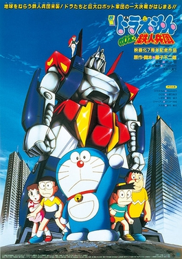

A fan-made tribute to Doraemon: Nobita and the Steel Troops (2011)
Steel Troops is not just a kids movie. Its emotions, message, and legacy still live in the hearts of fans. This site exists to unite the community and keep that legacy alive.
Many fans believe Steel Troops deserves a continuation. Every voice matters. Keep the discussion alive.